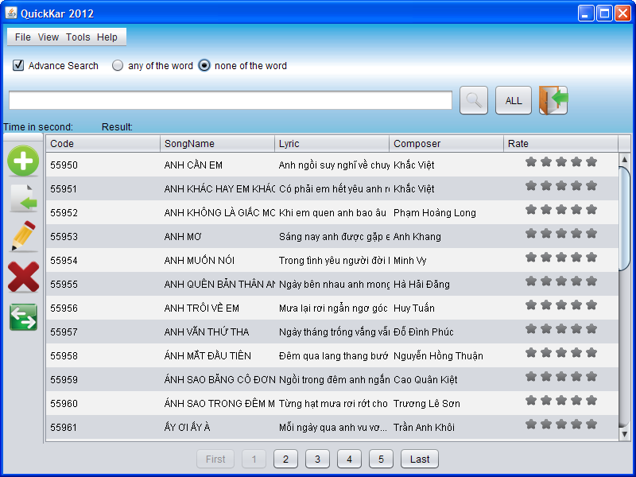

Overview
When you first startup the program, this panel appears:
Exit: quit the program, save all changes made if any.
English/Vietnamese: Switch the GUI between English and Vietnamese interface.
Guest: use this program as a CUSTOMER.
Staff: this is for STAFF and ADMIN to login and manipulate the database.
In Guest mode, customers are allowed to perform searching, sorting ONLY. No edit priviledges are granted for customers. There are 2 GUIs for choosing between them. More details later.
Customer
To use this program as a Customer, click on Guest
This is the main window for Customer:
The program list all the songs available in the database, dividing into 20 songs per pages. Users can click on the page number buttons located at the bottom line to switch back and forth.
To perform a song search: type a piece of word in the search box - located under the menu bar and hit Enter, or click . Searching can be performed using any information, from SongCode, to SongName, Lyrics, or Composer.
NOTE: The updated version implements Instant search for Simple Search mode, so users do not need to hit Enter anymore. Just type the keywords, and the result will be displayed below, with the keyword highlighted.
This program support Unicode, so you can just type in Vietnamese with full accents support.
For example, if we want to search for "tia nang hat mua":
To come back to display all songs: click on the button "ALL".
Customers can rate the song they like, by clicking on the star:
Note that he or she needs to provide phone number to rate.
The 10 top rated songs will appear in a separated list for reference.
There are 2 kinds of search: Simple search and Advanced search.
Simple search: Search by keywords against all song fields (code, title, lyrics, and composer). A song is displayed in the result list only if ALLof the given keywords found in the fields of the song.
Advanced search: song search with: "Exact keyword or phrase", or "Any of the keywords", or "None of the keywords"
To switch between 2 available GUIs: click on the button , or press SHIFT + S.
This is the 2nd GUI:
To quit the program: click on .
To view the information about the authors: click Help > About or press SHIFT + A
To get online help: click Help > User Guide or press F1 at any time.
Staff
To use this program as Staff, click on "Staff" button and login using your account information.
This is the main window for Staff:
Staff has all the functions of Customer, plus some more additional features:
Import songs to database: Initially, the program's database is blank. It can receive data from multiple .CSV files with "," delimeter. To import data from appropriatedly formated CSV files, click and point to the CSV files, click Open. Wait till it finishes and click OK.
More info on .csv format: The .csv content should be EXACTLY formatted as:
SongCode,"SONGNAME","Lyric, lyric",Composer
SongCode,"SONGNAME","Lyric, lyric","Composer1, Composer2"
Do not leave any other additional character but those specified above.
Add a song: click on or press Ctrl + N and fill in the form. Then click "Add".
Note: SongCode field must contain exactly 5-digits and must not be the code already been in the database.
Edit a song: choose a song, then click , or right click and choose Edit:  , or press Ctrl + E.
, or press Ctrl + E.
Delete a song or many: choose songs, then click or right click and choose Delete: , or press Ctrl + D.
To switch between 2 available GUIs: click on the button , or press SHIFT + S.
This is the 2nd GUI:

Any action performed will be save when the program is close or logout. User can also choose File > Save to save manually as needed.
Admin
To use this program as Admin, click on "Admin" button and login using your account information.
This is the main window for Admin:
Features:
Add an account: click , or press Ctrl + N and fill in the form. Then click "Add".
Note:
Email must be valid. i.e. It must not be something like: aa@aa.aa. Should be name@yahoo.com
Phone must be in the pattern of xx-xxxx-xxxx or xxx-xxx-xxxx
Edit an account: choose an account, then click , or right click and choose Edit: , or press Ctrl + E.
Delete account(s): choose account(s), then click , or right click and choose Edit: , or press Ctrl + E.